2026 年 11 月 11 日
AI 编程的兴起，让以往的编程范式快速步入末法时代，而我在不经意中发现，Go 语言并非如我以前所想，不值得我涉足。之前我有一些想写的程序，若用 Go 语言来写，应该比用我现在熟悉的语言更为容易。若能对 Go 语言有所把握，驱动 AI 替我用 Go 语言写出这些程序，未必能襄我大业，至少也能卸下心里一些块垒。
在此番学习 Go 语言的过程中，我决定让 AI 充当助教，加快进度。我会尽力忠实记录这一过程。本文最终会成为一份另类的 Go 语言教程，它不会追求向你展示 Go 语言的一切，只是忠实于我个人的需求。弱水三千，我只能让你领略一瓢，但它应该足够精彩。我通常无法忍受乏味的事情，会尽力不让它们出现在这份文档里。若你觉得这份文档甚为乏味，也只是我内心存在着我无法觉察的乏味，而非你的品味出现了问题。
若你此前已经有了一些编程经验，亦即你已经熟悉了一种甚至多种编程语言，我认为无需再沿着最基本的变量、表达式、循环语句、函数、复合数据结构……这条面向零编程经验者的路线去学习 Go 语言，更应立足于自身需求，以问题驱动的方式去熟悉它。这种学习方法对于其他你想要学习的语言应该同样成立。
人类文明传续至今，而你深处其中，这通常意味着，无论学习任何知识，你都不是一张白纸。以问题驱动的学习方式，一直适合每个人，只是以往许多写教程的人，习惯性地将读者当成了零基础的人。
每当遇到自己难以理解之处，无需怀疑自己天资太差，而应当尽力凭借以往的经验或感受，逐步将其拆解并吸纳。这份文档也在尝试践行这一理念。或许在 AI 时代，这种学习方式会更为容易一些。借助 AI，你能快速检索到许多看似不如你的人的经验和感受，而其中往往包含着你因自恃聪明而忽略的一些视角。甚至可以断定，现在的 AI 之所以显得比人类聪明，正是因为它足够笨。
深夜，我在微信里跟老家的李雷说，Linux 系统里有一个命令叫
echo，你向它输入什么，它就会输出什么，像 f(x) =
x，输入韩梅梅，它就会输出韩梅梅。李雷不信，世上怎么会有人如此无聊，写出如此无聊的命令。
我忽然发现，竟然一时无法向他证明此事。虽然我能够将 echo
命令的执行过程录成视频，但是他会怀疑我在拿 AI
生成的视频忽悠他，过去我时常这样骗他。他从未用过 Linux，自然不知如何通过
ssh 登陆我的机器，亲手敲一遍这个命令。
这次我不想再骗他。我觉得，我可以写一个网络程序，从一个网页里接收他输入的
echo
命令，转发到我本地的终端去执行，再将所得结果写入网页，让他看到。倘若他还是不信，那至少这个网页的行为和
echo
命令一模一样——他亲手输入，亲眼看到输出，总不能说我又在骗他，他顶多会说没想到我竟然如此无聊。
可是我不会写网络程序。我倒是懂一些 C socket API，但我总不能为了做这件无聊的事情，去写几百行 C 程序。我听说过 Go 是云计算时代的主力语言，于是问 DeepSeek 能否给我写一个最简单的程序，只要它能够让他人在远方通过网页浏览器便可调用，并在网页里输出「李雷，你好啊！」
我不会用 AI agent，因为我没钱。我是在免费的聊天网页里问的 DeepSeek，它并未歧视我很穷，很爽快地给出了答案，
@ hi-lilei.go # package main import ( "fmt" "net/http" ) func main() { http.HandleFunc("/", func(w http.ResponseWriter, r *http.Request) { fmt.Fprint(w, "李雷，你好啊！") }) http.ListenAndServe(":8080", nil) }
先等等……我的机器上好像还没有 Go 编译器。DeepSeek 说，最好没有，你的 Linux mint 官方仓库里的 Go 编译器包 golang-go 太旧了，用最新的吧！去 Go 官方下载页面 https://go.dev/dl/，找到 Linux 对应的 go1.xx.x.linux-amd64.tar.gz 压缩包链接，下载，解包，安装到 /usr/local/go 目录，
$ wget https://go.dev/dl/go1.27.4.linux-amd64.tar.gz
$ tar zxvf go1.27.4.linux-amd64.tar.gz
$ sudo rm -rf /usr/local/go # 若之前在此装过 go，便将其删除
$ sudo mv go /usr/local这些操作一气呵成后，只需再修改 Bash 配置文件 $HOME/.bashrc，在其中增加
export PATH=/usr/local/go/bin:$PATH至此，在新开启的 Bash 命令行环境中，便可使用 go 命令编译
Go 语言所写的程序了。
这种安装和配置软件的任务，按照 DeepSeek 所说的步骤去做，虽然要动手，但是可以知道 Go 编译器从哪里来，到哪里去。若是有钱，也可以雇佣 DeepSeek 装好这一切，而我们装作什么都知道。这样的时代真好，大家不用再去比较 Windows 是不是比 Linux 更易用了。
然后呢？我问 DeepSeek。它说，将刚才给出的 Go
代码除第一行「@ hi-lilei.go #」 之外的所有内容保存为
hi-lilei.go 文件，执行
$ go run hi-lilei.go然后打开网页浏览器，输入
127.0.0.1:8080，回车，便可看到
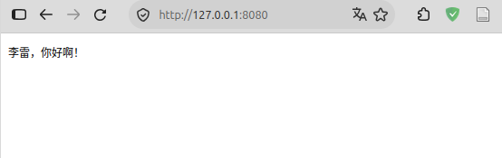
我有一件 t 恤衫，胸前印着「There is no place like 127.0.0.1」，我知道只要这个叫 127.0.0.1 的地方能让 hi-lilei.go 这个程序产生响应，就意味着有可能全世界的机器都能通过网络访问这个程序，只是全世界的人都不会这么无聊罢了。
根据我的一些编程经验，能够看得出来，
func(w http.ResponseWriter, r *http.Request) {
fmt.Fprint(w, "李雷，你好啊！")
}是匿名函数，w 和 r
皆为该函数的参数。这个匿名函数的功能应该是将文本写到我访问的那个网页里，于是我看到了「李雷，你好啊！」。我将这几行代码写成
C 代码的样子，
void 匿名函数(http.ResponseWriter w, http.Request *r) {
fmt.Fprint(w, "李雷，你好啊！");
}然后问
DeepSeek，这样理解可以？它说可以。然而我的理解也仅到这个程度，至于变量类型
http.ResponseWriter 和 http.Request
所指为何，我知道，只要我追问下去，DeepSeek
一定会给我详细解释清楚，然而那样会让我过早地陷入细节里，忘记了我要为李雷所写的这个程序该如何继续演绎成我想要的样子。我没有追问下去，而是问
DeepSeek，我现在是否可以顾名思义，w
像是可以在网页里写东西的工具，而 fmt.Fprint
是将所写的东西整理成指定的格式转交给 w？可以，DeepSeek
回应我。
我在 C
语言里见识过回调函数，我大概能猜得出来，http.HandleFunc
是在处理一个叫做 "/"
的事件，而那个匿名函数会被该事件触发。至于
http.ListenAndServe(":8080", nil) 便是这个 go
程序在等待别人访问我机器上的 8080
端口，一旦有人访问，便会触发 "/"
事件，于是匿名函数被调用，访问者就会得到写有内容的页面了。
DeepSeek 指出了我的猜想中的一个不实之处。"/"
是路径，既可表示根路径，也可用于兜底一些未被响应的路径。实际上，当我在网页浏览器输入
127.0.0.1:8080 并回车时，浏览器会自动补上
/，亦即浏览器发送的地址实际上是
127.0.0.1:8080/，当 Go
程序响应浏览器的请求时，会认为用户试图调用为 "/"
指派的函数。倘若我向浏览器提交的地址是
127.0.0.1:8080/foo，而程序中没有为 "/foo"
指派函数，则以 "/" 方式处理。
可是，我该如何让李雷访问这个程序呢？127.0.0.1 只是我的机器的自指地址。李雷若是用这个地址，他访问的只是自己的机器里一个不存在的网络程序。我想起来，之前曾用过一个用 Rust 语言编写的内网穿透工具，名字好像叫 bore-cli。我问 DeepSeek，在 Go 的世界里有没有类似工具，它想了想，说可以试试 expose，只需执行
$ go install github.com/kernelshard/expose/cmd/expose@latest就有了。我说，理论上可能如此，然而我在国内啊，这 github.com 时常可望而不可及。DeepSeek 说，无妨，可将 Go 语言模块下载站点设为国内镜像站点，
$ go env -w GOPROXY=https://goproxy.cn,direct我问，这样可一劳永逸？DeepSeek 说，没错，你若执行
$ go env GOENV便可得到 Go 环境变量文件所在路径，go env -w
可将所作的设定写入该文件里。之后，当你执行 go install
之类的命令时，便会先从设定的国内镜像站点下载文件。若所求文件，镜像站没有，会自动回退为
direct，亦即回退至 Go 模块的源仓库。
装好了 expose，然后呢？DeepSeek 说，执行
$ expose tunnel 8080注意端口号要与上面的 Go 程序所用的端口号相同。我执行了这个命令，得到了以下输出，
🚀 Tunnel[LocalTunnel] started for localhost:8080
✓ Public URL: https://legal-seals-camp.loca.lt
✓ Forwarding to: http://localhost:8080 (Ready)
✓ Provider: LocalTunnel
Press Ctrl+C to stop当我用浏览器打开 https://legal-seals-camp.loca.lt
这个网址时，我以为它已经能映射到 http://localhost:8080
了，可实际上看到的是
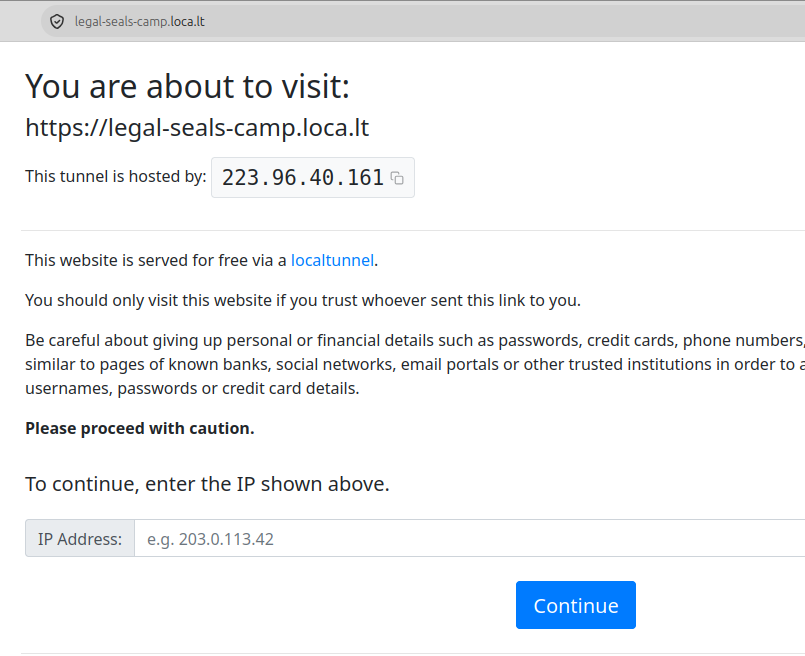
这个页面里的 IP 地址，应该是我的网络运营商的分配的出口公网 IP。我的机器，像是住在一栋没有门牌号的大楼（内网）里，但整栋大楼有一个对外的门牌号（出口公网 IP）。我通过这台机器发出的所有网络请求，外界看到的都是这个大楼的门牌号。
expose
为了避免自身被大家滥用，便设立了一道门槛，要求大家手动将自己的公网 IP
当作「验证码」输入后点击 Continue，方能穿过这道门槛，从而访问到我机器上
8080 端口，亦即 http://localhost:8080，而后者等效于
127.0.0.1:8080。
我在完成 IP 验证后，通过
https://legal-seals-camp.loca.lt 便可访问尚在运行中的
hi-lilei.go 程序，结果为
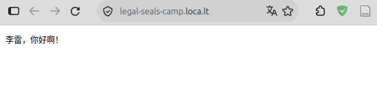
我将这个网址发给李雷，告诉他，在访问这个网址时，它会要求你输入页面上方给出的验证码，之后便可以看到来自远方的一句问候了。只是我有些累了，等明天我再为你创造那个
echo 命令。
李雷打开了我发给他的网址，看到了页面上显示的问候，然后在微信里说，哦，我看到了。
我能感受到他的语气非常平淡。他无法感受到，这世上有一个专为他而写的 Go 程序向他发来一句问候且仅此一次。即使他能感受到这些，回应的大概也不会变。毕竟这个页面所能产生的效果，还不如我直接从微信上给他发消息。他应该永远也无法理解我在激动什么，而我之所以激动，是因为在我写过的所有程序里，这是第一个能被别人在异地执行的。鲁迅早就说过，人类的悲欢并不相通。大概李雷只是觉得我吵闹……特别是那个需要手工输入 IP 地址的网页里含有太多的英文。
我很清楚，即使我能让他在那个网页里输入韩梅梅，他的反应也不过是，哦，我能输入……可是对于我而言，这个在我机器上运行的程序，若是能从异地获得别人输入的一些文字，宛若有了千里眼、顺风耳的法力。在接下来的故事里，DeepSeek 隐身了，但是你看到每一段代码，都是它写出来的。
一个能让他人输入一些文字的网页，若使让它足够简单，则其 HTML 代码为
<!DOCTYPE html>
<html>
<head><meta charset="utf-8"></head>
<body>
<form method="POST">
<input type="text" name="from-lilei">
<button>提交</button>
</form>
</body>
</html>如果你将上述代码保存至一份本地文件 foo.html，然后用浏览器打开它，所见网页会类似于
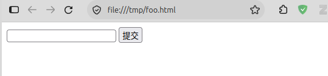
在上一节的 Go 程序里，只需用上述 HTML
代码替换「李雷，你好啊！」，
http.HandleFunc("/", func(w http.ResponseWriter, r *http.Request) {
fmt.Fprint(w, `<!DOCTYPE html>
<html>
<head><meta charset="utf-8"></head>
<body>
<form method="POST">
<input type="text" name="from-lilei">
<button>提交</button>
</form>
</body>
</html>`)
})Go 语言字符串的字面值有两种形式，可以是
"李雷，你好啊！"这种双引号形式，也可以是上述代码里所用的反引号形式，前者可用于表达含有一些转义字符的文本，例如可以用\n表示换行符，而后者通常用于表达多行文本的原始形式，亦即不支持任何字符的转义。
重新运行这个 Go 程序，李雷便可以看到这个含有一个文本输入框的网页了，只是无论他输入什么，这个 Go 程序都尚无法知悉。当李雷真的在输入框里敲下「韩梅梅」并点击「提交」按钮时，页面会闪烁一下，输入框里的「韩梅梅」会消失不见，因为这个 Go 程序目前不管收到什么请求，都原样返回这段 HTML 代码。
那么，这个 Go 程序如何得到李雷的输入的文字呢？上述 HTML
代码中的输入框亦即 input 标记，其 name
属性的值是 from-lilei，在 Go 程序里，可以用一个变量通过
from-lilei 获取输入框中传来的文字，
http.HandleFunc("/", func(w http.ResponseWriter, r *http.Request) {
input := r.FormValue("from-lilei")
fmt.Printf("李雷的输入：%s\n", input)
fmt.Fprint(w, `<!DOCTYPE html>
<html>
<head><meta charset="utf-8"></head>
<body>
<form method="POST">
<input type="text" name="from-lilei">
<button>提交</button>
</form>
</body>
</html>`)
})
fmt.Printf将格式化的文本在本地终端里输出，而fmt.Fprint是将格式化的文本输出到指定的对象，例如w。
重新运行修改后的 Go 程序，若李雷在页面里输入了「韩梅梅」并提交，则这个程序会在其运行的终端里输出
李雷的输入：
李雷的输入：韩梅梅李雷第一次的输入为空，是因为他刚访问页面时，还没有输入内容，但是为
"/"
指派的匿名函数已被调用了。当李雷开始输入内容并提交时，该匿名函数则又被调用一次，这次李雷输入的内容会被
input 接收，然后在我机器里的终端中被
fmt.Printf 输出。
可以用条件语句判断 input
是否有值，仅在其有值时，才在我的终端里将其输出，
input := r.FormValue("from-lilei")
if input != "" {
fmt.Printf("李雷的输入：%s\n", input)
}Go 语言的条件语句与 C 语言相似，只是条件表达式无需括号。
现在，将 hi-lilei.go 写完整，
package main
import (
"fmt"
"net/http"
)
func main() {
http.HandleFunc("/", func(w http.ResponseWriter, r *http.Request) {
input := r.FormValue("from-lilei")
if input != "" {
fmt.Printf("李雷的输入：%s\n", input)
}
fmt.Fprint(w, `<!DOCTYPE html>
<html>
<head><meta charset="utf-8"></head>
<body>
<form method="POST">
<input type="text" name="from-lilei">
<button>提交</button>
</form>
</body>
</html>`)
})
http.ListenAndServe(":8080", nil)
}现在可以在宏观上谈谈我对 hi-lilei.go 程序的一些理解了。一个 Go
程序的源码，若以 package main 开头，表示这个程序是名为
main 的包，若此包内含有 main
函数，则意味着这个包是一个可以独立运行的程序，main
函数是其入口。
fmt.Fprint 和 fmt.Printf 皆为
fmt 的函数，而 http.HandleFunc 和
http.ListenAndServe 皆为 net/http
的函数。fmt 和 net/http
也都是包，只是它们无法像 main
包那样作为程序运行，而是为其他包提供一些功能。要在 Go
程序中使用某些包的函数，须先用 import 载入这些包。
http.HandleFunc 函数为根路径指派的匿名函数的参数
r，现在大概能从直觉上确定它的意义了。它是一个指针，所指对象应该含有用户从浏览器发来的请求（request），而请求是什么呢？应该是一个数据包。当李雷在浏览器的一些孔洞里输入了内容并提交，则该数据包便包含李雷的输入且由浏览器发送给
Go 程序。浏览器的地址栏以及 HTML 的 <input>
标记都是孔洞，前者的内容可被 http.HandleFunc
接收，后者的内容则包含在 http.Request 对象中，在程序里通过
FormValue 根据 <input>
标记的名字获得。
匿名函数的另一个参数 w，顾名思义便是回应者（response
writer）。Go
程序从浏览器发来的请求中获得数据，对其作出处理后，将结果格式化为 HTML
代码后交给
w，由后者将其写入数据包并发给浏览器。于是，从浏览器端来看，它向
Go
程序发送的一次请求，得到了一次回应，回应的结果便是网页的内容发生了变化。实际上，hi-lilei.go
已经创造了一个极为微小的动态网站。
不过，我没有打扰李雷，而是自己做了一些测试。我已明白，快乐其实很难与他人分享，而悲伤更是如此。当新的
hi-lilei.go 程序再度跑起来时，它已经很像一个 echo
命令了，只是我无法看到它的输入，而李雷没法看到它的输出，只是我自己去测试的时候，一切都能看到。
我已经不在乎李雷是否还在乎 Linux 里真的有一个叫 echo
的命令。当我发现，使用 Go 语言写出 hi-lilei.go
这样的程序，能够很简单地与千里之外的人对话，才让我认识到 Go
语言值得我花一些时间学习，它可以让我不需要耗费太多心思便可让本地的一些程序具备远程交互能力，而这一切需要从一个最简单的事情开始，一个
Go 程序如何访问我的机器里的确存在着的 echo 命令呢？
据我所知，C 语言可以通过标准库提供的 popen
之类的函数调用本地其他程序并获得其输出，Go 语言也应该有类似的能力。Go
语言的确有这种能力，由 os/exec 包提供。现在，写一个 echo.go
程序，其代码为
package main
import (
"fmt"
"os/exec"
)
func main() {
cmd := exec.Command("echo", "韩梅梅")
output, _ := cmd.Output()
fmt.Printf("%s", output)
}使用 go run 命令运行 echo.go，
$ go run echo.go
韩梅梅如我所愿，echo.go 程序执行了我的系统里的 echo
命令，且能将其输出转发给 fmt.Printf 函数，这也意味着若将
output 转发给 http.ResponseWriter 对象，则
echo 命令的输出发送给浏览器端了，亦即
cmd := exec.Command("echo", "韩梅梅")
output, _ := cmd.Output()
http.HandleFunc("/echo", func(w http.ResponseWriter, r *http.Request) {
fmt.Fprint(w, output)
})
http.ListenAndServe(":8080", nil)用上述代码取代 echo.go 里 main 函数的内容，然后在
import 语句里载入 net/http 包，重新运行
echo.go 程序后，让浏览器访问 127.0.0.1:8080/echo
这个地址，可以看到
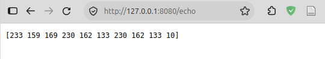
虽然所见并非韩梅梅，但应该能猜测到它是字符的某种编码。cmd.Output
返回两个值，第一个值是 echo 的输出，被我保存在
output 变量里，而第二个被一个我不想起名字的变量亦即
_ 符号直接忽略掉了。不过，output
保存的值并非字符串，而是一个字节序列。fmt.Printf
函数的格式化标记 %s
能够将字节序列转化为正常的文本编码——UTF-8 编码，但
fmt.Fprint
不具备这种能力，它会将每个字节当作十进制数输出。不过，可以用
string 函数将字节序列转化为 UTF-8
编码，亦即只需将上述代码中为 "/echo"
指派的匿名函数修改为
func(w http.ResponseWriter, r *http.Request) {
fmt.Fprint(w, string(output))
}再重新运行 echo.go 且重新访问 127.0.0.1:8080/echo
地址，则浏览器页面里便可看到「韩梅梅」。
于是，一个新世界的大门打开了，像是文明从石器时代跃迁至青铜甚至铁器时代。我试了试
ls 命令，亦即写一个 ls.go 程序，
package main
import (
"fmt"
"os/exec"
"net/http"
)
func main() {
cmd := exec.Command("ls", "-l", "/home/garfileo")
output, _ := cmd.Output()
http.HandleFunc("/ls", func(w http.ResponseWriter, r *http.Request) {
fmt.Fprint(w, string(output))
})
http.ListenAndServe(":8080", nil)
}然后执行
$ go run ls.go当我访问 127.0.0.1:8080/ls 时，我看到了
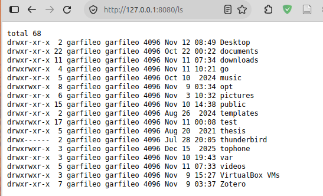
我的 Linux 里有很多命令，它们应该都能通过 Go 程序被他人调用。这意味着，即使我的 Go 语言学习过程就此戛然而止，受影响的应该主要是我写的页面没有机会变得更好看，交互方式也不再有机会变得更丰富，此外还有一些安全性问题——方便之门大开，风险自会涌入。
既然能够用 Go 语言将 echo 和 ls 等 Linux
命令封装为网络服务，对于更为复杂一些的软件，例如
Gnuplot，是否也能将其封装为网络服务呢？倘若可以，他人便可通过网页间接调用
Gnuplot 画出一些数学图形了。
若想实现上述需求，首先需要让网页能够支持用户输入多行文本。在网页的
HTML 代码里，将 <input> 标记换成
<textarea>，便可为用户构造支持多行文本的输入框，其初始尺寸可容纳
8 行文本，每行文本有 60 个字符的宽度，
<!DOCTYPE html>
<html>
<head><meta charset="utf-8"></head>
<body>
<form method="POST">
<textarea name="gnuplot-code" rows="8" cols="60"></textarea>
<button>提交</button>
</form>
</body>
</html>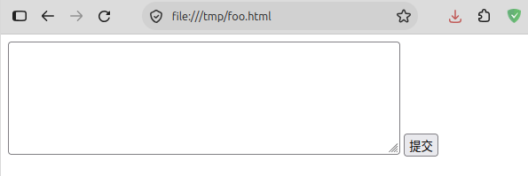
若让页面的外观略微正式一些，需要为 HTML 标记增加一些样式设定，
<!DOCTYPE html>
<html>
<head><meta charset="utf-8"></head>
<body>
<form method="POST" style="width: 480px">
<textarea name="gnuplot-code" rows="8"
style="display: block;
width: 100%;
box-sizing: border-box;
resize: vertical"></textarea>
<button style="display: block;
margin-left: auto;
margin-bottom: 1em">提交</button>
</form>
</body>
</html>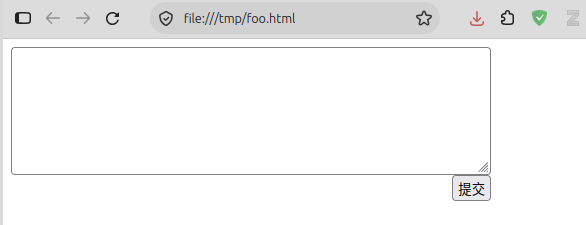
这些 HTML
样式的作用，我也不尽了然，我只知道它主要是设定了文本框的宽度以及「提交」按钮的位置。将这些
HTML 代码保存在全局变量 page 里，
var page = `<!DOCTYPE html>
<html>
<head><meta charset="utf-8"></head>
<body>
<form method="POST" style="width: 480px">
<textarea name="gnuplot-code" rows="8"
style="display: block;
width: 100%;
box-sizing: border-box;
resize: vertical">{{CODE}}</textarea>
<button style="display: block;
margin-left: auto;
margin-bottom: 1em">提交</button>
</form>
{{IMG}}
</body>
</html>`Go 语言的变量有两种声明方式，第一种是短变量声明，亦即前文所用的
:= 形式，例如
a := 1只要 := 左侧是一个新的变量，则上述语句便声明了变量
a，并将它的值初始化为
1。短变量声明只能在函数内使用。另一种是 var 声明，例如
var b = 1声明了变量 b 并将其值初始化为 1。无论是短变量还是
var 声明，Go
编译器都能根据变量的值自动推断变量类型，上述示例中的变量 a
和 b 的类型皆被推断为 int。也可以在
var 声明中显式设定变量类型，例如
var c uint = 42在函数内，变量可以先声明，然后再赋值，例如
var d float64
d = 3.1415需要注意的是，在全局变量 page 的值内，我特意放置了占位符
{{CODE}} 与 {{IMG}}，前者表示用户输入的
Gnuplot 代码，后者是我机器里的 gnuplot
命令生成的位图文件。若想将占位符替换为具体的文本，可使用
strings 包的 Replace 函数，例如
img := `<img src="demo.png" width="300px" />`
page_with_img := strings.Replace(page, "{{IMG}}", img, 1)则 page 中的占位符 {{IMG}}
部分便会被替换为给定的文本。Replace 函数的第 4
个参数用于设定文本替换次数，1
表示只替换一次，若该参数值为负数，表示占位符会被尽数替换。若让上述代码有效，需要在
import 语句中载入 strings 包。
现在若假设 {{CODE}} 的内容是一段可被
gnuplot 执行的代码，即
var code = `set terminal png
set output "demo.png"
plot sin(1/x)`则 page 中的 {{CODE}} 部分，可以替换为
demo 的值，
page_with_code := strings.Replace(page, "{{CODE}}", code, 1)于是，即使尚未开始调用 gnuplot
命令，也能写出一个具有欺骗性的 Go 程序
gnuplot.go，它能让别人看到一个代码输入界面和一个不存在的图片，
package main
import (
"fmt"
"net/http"
"strings"
)
var page = `<!DOCTYPE html>
<html>
<head><meta charset="utf-8"></head>
<body>
<form method="POST" style="width: 480px">
<textarea name="gnuplot-code" rows="8"
style="display: block;
width: 100%;
box-sizing: border-box;
resize: vertical">{{CODE}}</textarea>
<button style="display: block;
margin-left: auto;
margin-bottom: 1em">提交</button>
</form>
{{IMG}}
</body>
</html>`
func gnuplot(w http.ResponseWriter, r *http.Request) {
var code = `set terminal png
set output "demo.png"
plot sin(1/x)`
img := `<img src="demo.png" width="480px" />`
out := strings.Replace(page, "{{CODE}}", code, 1)
input := r.FormValue("gnuplot-code")
if input != "" {
out = strings.Replace(out, "{{IMG}}", img, 1)
}
fmt.Fprint(w, out)
}
func main() {
http.HandleFunc("/gnuplot", gnuplot)
http.ListenAndServe(":8080", nil)
}gnuplot.go 中与 "/gnuplot"
匹配的不再是匿名函数，而是普通的实名函数 gnuplot。按照 Go
语言的术语，应该称 gnuplot 是 /gnuplot
的路由函数。
现在若执行
$ go run gnuplot.go然后在浏览器中访问
127.0.0.1:8080/gnuplot，则所见如下
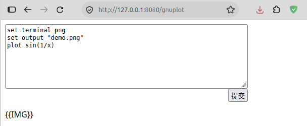
当我向 gnuplot.go 初次发送请求时，它检测到 input
为空，则写入网页的内容中会出现占位符
{{IMG}}，此时若是在网页里点「提交」按钮，则 gnuplot.go
再次接到请求，此时 input
不再为空，而是文本框里的代码，于是该程序便向网页中写入
<img>
标签，以显示一张图片，只是该图片尚不存在，网页中会显示一个表示图片无效的图标，
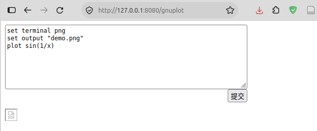
现在考虑，在 gnuplot.go 程序中，若 input
非空，则将其内容保存为 demo.gp 文件。该任务可由
os.WriteFile 函数完成，关键代码为
import (
...
"os"
)
os.WriteFile("demo.gp", []byte(input), 0644)上述代码创建的 demo.gp 文件会与 gnuplot.go
位于同一目录，且文件权限以八进制编码 0644 表示。若以 Linux
权限的字母表示，该权限即
rw-r--r--，亦即该文件，我可以看，也可以写，而他人只能看。还需要注意，os.WriteFile
向文件写入的是字节序列——Go 语言称之为字节切片——，而 input
的值文本，亦即字符串，需要用 []byte
将其转换为字节切片。若将字节切片转换为字符串，可用
string，前文曾做过此事。
demo.gp 文件实际上是 Gnuplot 脚本，可被 gnuplot
命令读取并执行其中语句，输出位图文件 demo.png。若用 Go 程序调用
gnuplot 命令完成此事，则关键代码可写成
import (
...
"os/exec"
)
if input != "" {
os.WriteFile("demo.gp", []byte(input), 0644)
cmd := exec.Command("gnuplot", "demo.gp")
cmd.Run()
out = strings.Replace(page, "{{CODE}}", input, 1)
out = strings.Replace(out, "{{IMG}}", img, 1)
}需要注意，之前用 cmd.Output 函数让 cmd
得以运行并获取所调用命令在终端里的输出内容，但是在这个例子并不需要
gnuplot 命令的输出内容，只需要让该命令得以运行，故而用的是
cmd.Run 函数。
现在，将 gnuplot.go 改进为
package main
import (
"fmt"
"net/http"
"strings"
"os"
"os/exec"
)
var page = `<!DOCTYPE html>
<html>
<head><meta charset="utf-8"></head>
<body>
<form method="POST" style="width: 480px">
<textarea name="gnuplot-code" rows="8"
style="display: block;
width: 100%;
box-sizing: border-box;
resize: vertical">{{CODE}}</textarea>
<button style="display: block;
margin-left: auto;
margin-bottom: 1em">提交</button>
</form>
{{IMG}}
</body>
</html>`
func gnuplot(w http.ResponseWriter, r *http.Request) {
var code = `set terminal png
set output "demo.png"
plot sin(1/x)`
out := strings.Replace(page, "{{CODE}}", code, 1)
img := `<img src="demo.png" width="480px" />`
input := r.FormValue("gnuplot-code")
if input != "" {
os.WriteFile("demo.gp", []byte(input), 0644)
cmd := exec.Command("gnuplot", "demo.gp")
cmd.Run()
out = strings.Replace(page, "{{CODE}}", input, 1)
out = strings.Replace(out, "{{IMG}}", img, 1)
}
fmt.Fprint(w, out)
}
func main() {
http.HandleFunc("/gnuplot", gnuplot)
http.ListenAndServe(":8080", nil)
}只是，执行这个程序后，若访问 127.0.0.1:8080/gnuplot
服务，即使向 gnuplot.go 提交了 Gnuplot
代码，网页里文本框的下方依然是图像无效标志，但是在 gnuplot.go
所在的目录中，的确已经有了 demo.png 文件。造成问题的原因是，浏览器得到
gnuplot.go 传来的网页后，会对 HTML 解析和渲染，当它遇到
<img src="demo.png" /> 标记时，会自动向 gnuplot.go
再次发起请求，所用路径为 /demo.png，而 gnuplot.go
没有为该路径提供路由函数。
现在，为 /demo.png 提供路由函数，
http.HandleFunc("/demo.png", func(w http.ResponseWriter, r *http.Request) {
http.ServeFile(w, r, "demo.png")
})http.ServeFile
函数的作用是将本地某个文件的内容作为此次请求的响应发送出去，当浏览器端得到了此次响应的内容，便将图片的内容呈现出来。将上述路由设定添加到
gnuplot.go 的 main 函数里，然后重新运行
gnuplot.go，此次若在浏览器里提交 Gnuplot 代码，结果为
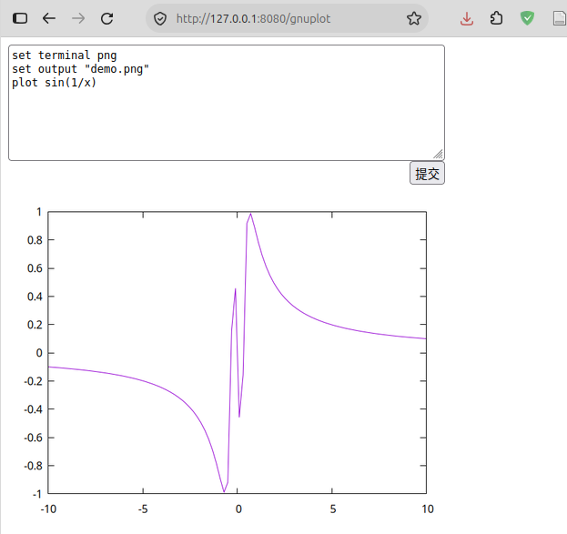
上一节实现的 gnuplot.go 程序，只能用于证明此路可行，却不能证明此路甚好。实际上这个程序很是狭隘，理论上它只能有效回应一个人向它发起的请求。若是两个人或多个人同时向它发起请求，意味着他们在同时以间接方式将不同内容同时写入 demo.gp 文件，然后又以间接方式同时查看 gnuplot 命令生成的位图文件 demo.png，最终可能有人会看不到自己想要的结果。绝大多数网络程序，都要处理这种同时有很多输入和输出的情况。虽然 Go 语言已经尽力让这类任务变得颇为容易，却无法阻挡因缺乏基本并发处理意识的我写出脆弱的代码。
若让 gnuplot.go 变得更为正确一些，首先应该考虑，将每个用户的输入文本保存为文件时，应当保证该文件的名字具有唯一性。然后，让 gnuplot 命令输出的位图文件的名字也具有唯一性，这意味着之前用户可以在自己提交的 Gnuplot 代码里写
set terminal png
set output "demo.png"现在这个权限需要收回，用户也不会有任何反对，因为他们可以少写两行代码。
若让文件的名字具有唯一性，可以构造一个全局性的计数器，将计数器不断变化的值嵌入文件名，这是最简单也是最有效的办法。可以用一个无符号整型类型的全局变量表示这个计数器，
@ 计数器 gp_id # var gp_id uint = 0 => gnuplot 函数 => gnuplot 函数 [v2]
每次将用户的输入文本保存为文件前，让计数器增 1，当此值大于 100 时，便归零。这意味着 gnuplot.go 提供的服务最多同时支持 100 人在线访问。Go 语言提供了字符串格式化函数，可以将计数器的值转化为字面符号，作为文件名后缀，例如
@ 构造唯一的文件名 # if gp_id > 99 { gp_id = 0 } gp_id++ gp_name := fmt.Sprintf("drawing-%d", gp_id) gp_file_name := gp_name + ".gp" => 处理用户输入
在将 gnuplot.go 中的 input 的值写入文件之前，在
input 首部加入 Gnuplot 图形输出终端的设定语句，
@ 构造唯一的文件名 # + new_input := "\nset terminal png\nset output " new_input += `"` + gp_name + `.png"` + "\n" + input
这一切都发生在 gnuplot.go 的 input 的值非空时，
@ 处理用户输入 # if input != "" { # 构造唯一的文件名 @ os.WriteFile(gp_file_name, []byte(new_input), 0644) cmd := exec.Command("gnuplot", gp_file_name) cmd.Run() out = strings.Replace(page, "{{CODE}}", input, 1) img := `<img src="` + gp_name + `.png" width="480px" />` out = strings.Replace(out, "{{IMG}}", img, 1) } => gnuplot 函数
上述所写的代码片段使用的 @ ... #
表示一个代码片段的名字。在一个代码片段里，若使用
# ... @，表示将指定名字的代码片段的内容插入此处。这些符号皆为我设计的文学编程标记，而非
Go
语言的语法。这些标记并非仅能用于示意，它们也方便从文档里抽取代码片段，详见《xi：一个简单的文学编程工具》。
gnuplot.go 的 gnuplot 函数现在可修改为
@ gnuplot 函数 # # 计数器 gp_id @ func gnuplot(w http.ResponseWriter, r *http.Request) { var code = "plot sin(1/x)" out := strings.Replace(page, "{{CODE}}", code, 1) input := r.FormValue("gnuplot-code") # 处理用户输入 @ fmt.Fprint(w, out) }
用上述代码片段替换 gnuplot.go 中的 gnuplot
函数，便可保证多个用户可以同时提交 Gnuplot
代码而不会产生冲突。但是，当浏览器得到响应后，发现自己需要再次发送请求，方能获得诸如
drawing-1.png、drawing-2.png、…… 等位图文件，而 gnuplot.go
不可能为每个位图文件路径都提供路由函数。Go 语言的 http
包早已想到了这种需求，它提供了 http.FileServer 函数和 http.Dir
类型，可以将指定的目录作为浏览器端所认为的根目录，并将其作为 Go
程序中根路径的路由，亦即
@ 设置网站根目录 # http.Handle("/", http.FileServer(http.Dir("."))) => 设置了网站根目录的 main 函数
. 表示当前目录，亦即 gnuplot.go
程序所在目录，该目录会被浏览器端视为根目录，然后便可请求 gnuplot.go
将该目录下的 drawing-1.png、drawing-2.png、……
等文件作为响应发给它。
现在只需将 gnuplot.go 的 main 函数修改为
@ 设置了网站根目录的 main 函数 # func main() { http.HandleFunc("/gnuplot", gnuplot) # 设置网站根目录 @ http.ListenAndServe(":8080", nil) }
便有了一个新的 Gnuplot 网络服务程序了，若用户 A 向它提交 drawing-1.gp 文件，则该程序以 gnuplot 命令生成的位图文件 drawing-1.png 作为响应，同时若用户 B 向它提交 drawing-2.gp 文件，则该程序以 gnuplot 命令生成的位图文件 drawing-2.png 作为响应……永远不会出现一个用户得到的是另一个用户想要的结果，前提是用户在线人数小于 100。
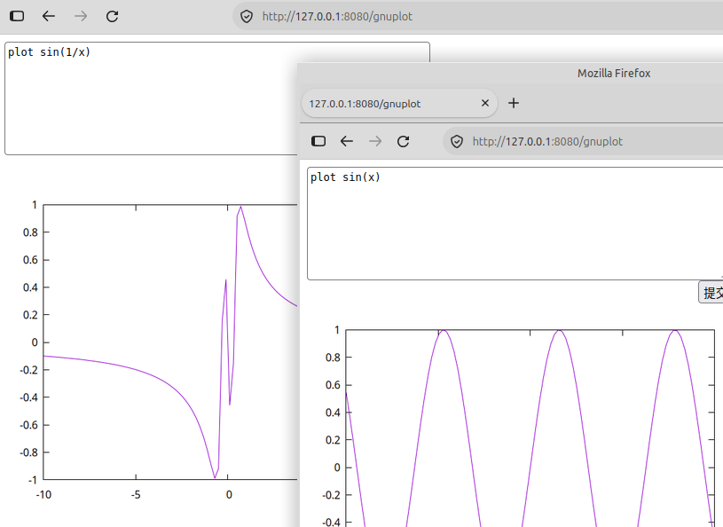
也许你已经发现了，上一节所写的 gnuplot.go 程序在本质上依然不支持多用户同时在线访问，它没有真正解决问题，只是将问题从固定的两个文件转移到了计数器身上了。问题集中在下面这几行代码上，
@ 更新 gp_id # if gp_id > 99 { gp_id = 0 } gp_id++ => gnuplot 函数 [v2]
当多个用户同时向 gnuplot.go
发起请求时，后者便会同时执行上述代码多次，由于 gp_id
是全局变量，于是又出现了多次同时修改同一个对象的情况。可能用户 A 拿到的
gp_id 值本该是 1，但是用户 B 同时执行了这段代码，导致 A
拿到的值是 2。观音虽有百手，但其本体却只有 1 个，gp_id
则是其本体的一部分。
为了克服这类问题，Go 语言的 sync
包提供了互斥锁机制。该机制的想法非常简单，就是给一段代码加一把锁，所有的同时发生的事情，在这把锁面前，都要排队，然后再逐一穿过这段代码。锁本身也是一个全局变量，例如
@ gp_id 锁 # var gp_id_mu sync.Mutex => gnuplot 函数 [v2]
对上述代码加锁和解锁的过程可写为
@ 更新 gp_id # ^+ gp_id_mu.Lock()
@ 更新 gp_id # + gp_id_mu.Unlock()
上述代码我用了两个新的文学编程标记，^+
表示指定的代码片段之前插入代码，+
则表示在指定的代码片段之后插入代码。上述示例产生的效果是，在名字为「更新 gp_id」这段代码之前添加
gp_id_mu.Lock()然后在其之后添加
gp_id_mu.Unlock()于是，意味着名字为「更新 gp_id」这段代码最终变为
gp_id_mu.Lock()
if gp_id > 99 {
gp_id = 0
}
gp_id++
gp_id_mu.Unlock()如此便可保证所有同时修改 gp_id 的操作变成排队修改
gp_id。排队自然是要以时间为代价，亦即 gnuplot.go
程序不如之前的版本跑得快，只是用户通常感受不到这点差异，毕竟 gnuplot.go
在调用 gnuplot 命令时耗费的时间远大于更新
gp_id 的值。
现在，正式写出一个真正可用的 gnuplot.go 程序，并且再普及如何用文学编程的方式定义一些代码片段，并将其组装为完整的程序。首先，需要写出程序几乎千篇一律的开头，它们的区别通常仅仅是所需要的包有所不同，
@ gnuplot.go 程序开头 # package main import ( # gnuplot 服务所需要的包 @ ) => gnuplot.go 程序
gnuplot.go 需要以下包
@ gnuplot 服务所需要的包 # "fmt" "net/http" "strings" "os" "os/exec" "sync" => gnuplot.go 程序开头
gnuplot.go 的网页界面保存在全局变量 page 中，
@ gnuplot 的网页界面 # var page = `<!DOCTYPE html> <html> <head><meta charset="utf-8"></head> <body> <form method="POST" style="width: 480px"> <textarea name="gnuplot-code" rows="8" spellcheck="false" style="display: block; width: 100%; box-sizing: border-box; resize: vertical">{{CODE}}</textarea> <button style="display: block; margin-left: auto; margin-bottom: 1em">提交</button> </form> {{IMG}} </body> </html>` => gnuplot.go 程序
对于用户从网页文本框中提交的文本，处理过程为
@ gnuplot 函数 [v2] # # gp_id 锁 @ # 计数器 gp_id @ func gnuplot(w http.ResponseWriter, r *http.Request) { var code = "plot sin(1/x)" out := strings.Replace(page, "{{CODE}}", code, 1) input := r.FormValue("gnuplot-code") if input != "" { # 更新 gp_id @ gp_name := fmt.Sprintf("drawing-%d", gp_id) gp_file_name := gp_name + ".gp" os.WriteFile(gp_file_name, []byte(new_input), 0644) cmd := exec.Command("gnuplot", gp_file_name) cmd.Run() out = strings.Replace(page, "{{CODE}}", input, 1) img := `<img src="` + gp_name + `.png" width="480px" />` out = strings.Replace(out, "{{IMG}}", img, 1) } fmt.Fprint(w, out) } => gnuplot.go 程序
在 gnuplot.go 的 main
函数中，设定路由函数，并启动网络服务，
@ gnuplot.go 的 main 函数 # func main() { http.HandleFunc("/gnuplot", gnuplot) http.Handle("/", http.FileServer(http.Dir("."))) http.ListenAndServe(":8080", nil) } => gnuplot.go 程序
将上述代码片段组装起来，便可得到 gnuplot.go 程序，
@ gnuplot.go 程序 # # gnuplot.go 程序开头 @ # gnuplot 的网页界面 @ # gnuplot 函数 [v2] @ # gnuplot.go 的 main 函数 @
若已经装了 xi 程序，且已获得本文档的源文件「go-with-me.xi」，执行
$ xi -t -e "gnuplot.go 程序" -o gnuplot.go go-with-me.xi便可得到完整的且含有本节更新内容的 gnuplot.go
程序，它已经是一个可以真正使用的网络服务程序了，只是该程序调用的
gnuplot
命令不是足够安全，不过运行该程序，仅向自己的朋友提供服务是完全可行的。
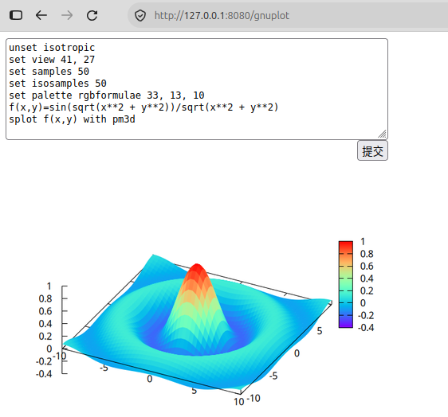
在「百手观音」一节，为了让用户的浏览器端能够获得 Gnuplot 生成的位图文件，使用了以下代码
http.Handle("/", http.FileServer(http.Dir(".")))将 gnuplot.go
程序的工作目录暴露出来，让浏览器端觉得该目录即这个网站根目录。若此时
gnuplot.go 程序正在运行，在浏览器端访问
127.0.0.1:8080，所见景象为
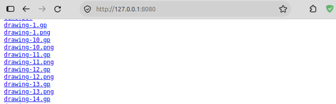
这意味着，当浏览器端向 gnuplot.go 程序发来根路径的请求是，后者会将自身工作目录里的文件列表作为响应发送给浏览器端，这也意味着浏览器端可以访问该目录里的任何一个文件。
http.FileServer
还有一个特殊作用，假如它暴露出的目录中含有 index.html
文件，则浏览器不再显示文件列表，而是显示这个网页。这意味着即使 Go
程序没有在该目录内生成任何东西，该目录也可以作为一个静态网站使用。
我曾写过一个可以构建静态网站的 Bash 脚本，见「如何用 90 行代码写一个静态网站构造工具」，实际上这个脚本建立的只是一些目录，且每个目录内皆有 index.html 文件。以前，我若想让他人访问该网站，需要借助 nginx，而现在只需 Go 程序将该网站的根目录暴露出来即可。
假设，我在 /home/garfileo/public 目录中用上述 Bash
脚本构建了一个静态网站，其根目录为 my-site，则下面的这个 Go
程序便可让他人访问这个网站，
@ my-site.go # package main import ("net/http") func main() { http.Handle("/", http.FileServer(http.Dir("/home/garfileo/public"))) http.ListenAndServe(":8080", nil) }